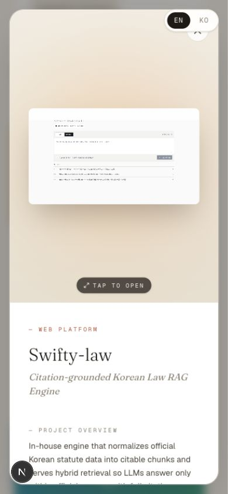

P1 / 모바일 모달
언어 스위처가 모달 닫기 버튼과 겹친다
LanguageSwitcher.tsx:9의 전역 fixed top-4 right-4 z-50가
ProjectModal.tsx:23의 z-40 모달보다 위에 있다.
닫기 버튼도 ProjectModal.tsx:38에서 z-50라서
모바일에서는 두 컨트롤이 같은 모서리에서 경쟁한다.
- 개선 방향: 모달/프레젠테이션이 열릴 때 언어 스위처를 숨기거나, 모달 레이어를 명확히 더 위로 올린다.
- 추가 개선: 닫기 버튼은 스크롤 컨테이너 안의
absolute가 아니라 viewport 기준fixed또는 컨테이너 내부sticky로 둔다. - Trade-off: 모달 안에서 언어 전환은 덜 편해지지만, 닫기/탐색의 안정성이 더 중요하다.
